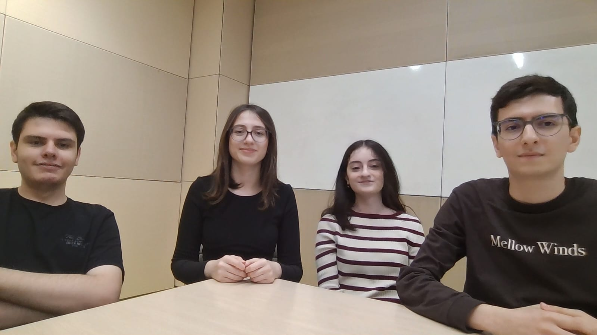
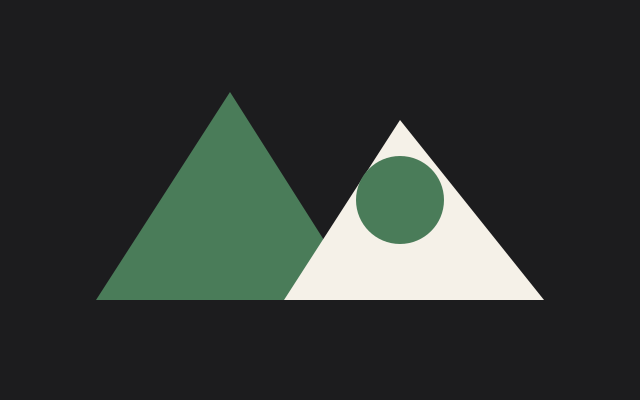
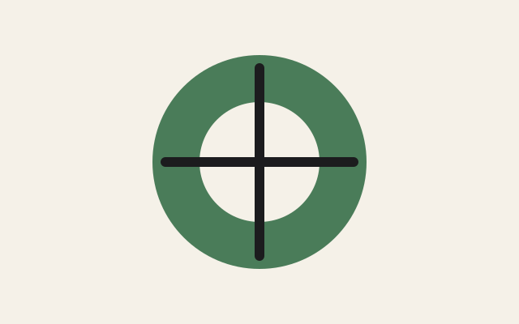

Projects
Project One: Logic Gates

My teammates and I built AND, OR and NOT logic gates on a breadboard. We wired each gate by hand and tested how it works.
Watch videoProject Two

Add a short description of this project here.
Project Three
Add a short description of this project here.
Project Four

Add a short description of this project here.